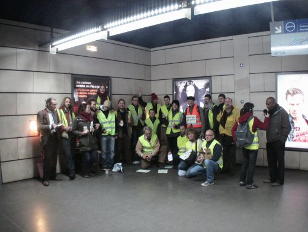

| |
Site dédié à la publication d'informations communiquées par le Collectif des déboulonneurs. En aucun cas ce site n'appelle à des actions illégales. | |
 |
||
|
Accueil du site > Rouen > Action au blanc d’Espagne dans le métro de Rouen - Samedi 10 décembre

La vidéo de l’action | Les dessinsHoraires de l’action : Samedi 10 décembre de 10h à 12h30 Lieu : 2 équipes de déboulonneurs ont écrit 75 slogans sur des surfaces publicitaires de 12 stations du métro de Rouen (JCDecaux) et sur 16 surfaces d’obstacles urbains du centre ville (JCDecaux) Nombre de panneaux touchés : cela fait donc 91, au blanc d’Espagne. Nombre d’activistes : 34 Nombre approximatif de passants-spectateurs : plusieurs centaines durant l’action, quelques grincheux mais la majorité des passants a manifesté son approbation, notamment parce que les slogans sont biodégradables, se retirant d’un simple coup de chiffon. Nombre approximatif de journaliste présent : 1, de la radio locale HDR. Nombre approximatif de policiers : la TCAR (métro de Rouen) a appelé la police, deux camions de la police nationale sont venus à 11h30 pour coincer une équipe qui a donc été sommée d’arrêter ses barbouillages, l’autre équipe continuant ailleurs son action jusqu’à 12h30. 14 activistes de la première équipe ont eu une vérification de leur identité. La TCAR a dit vouloir porter plainte. Nous avons l’habitude de ce genre de propos déjà entendus lors de 3 autres actions dans le métro de Rouen, toujours sans suite. Restons toutefois vigilants ! Attitude de la police : Très grand calme. La police connaît bien les déboulonneurs à Rouen. Attitude non-violente exemplaire des déboulonneurs arrêtés. Il n’y a pas eu confiscation du matériel. Slogans peints au blanc d’Espagne :
12h30, un bilan à chaud a été fait, autour d’un savoureux apéro, avec 18 participants. Une bonne action aux dires de tous. Faits particuliers : chaque activiste portait un gilet jaune de la sécurité routière, avec dans le dos un visuel A4 portant un slogan antipub (voir la vidéo). Des quilles de jonglage dans une équipe. Ces visuels apaisent toujours les tensions des passants. Sur chaque panneau barbouillé, nous avons mis avec un ruban adhésif un A5 expliquant l’action, avec l’indication du site national ; ce qui fut très lu par les passants. 10h après l’action, la presque totalité des slogans étaient encore en place, à l’exception de ceux sur les obstacles urbains en surface, une équipe d’astreinte JCDecaux circulant le samedi en ville pour surveiller ses étrons. L’ensemble des panneaux barbouillés dans le métro n’a été nettoyé que le lundi tôt le matin. Remarque : dans les stations en plein air, le blanc d’Espagne s’est quelque peu dégradé dès le dimanche matin, le blanc d’Espagne supportant mal l’humidité de la nuit. |
|
Site utilisant SPIP - Hébergement Ouvaton
|